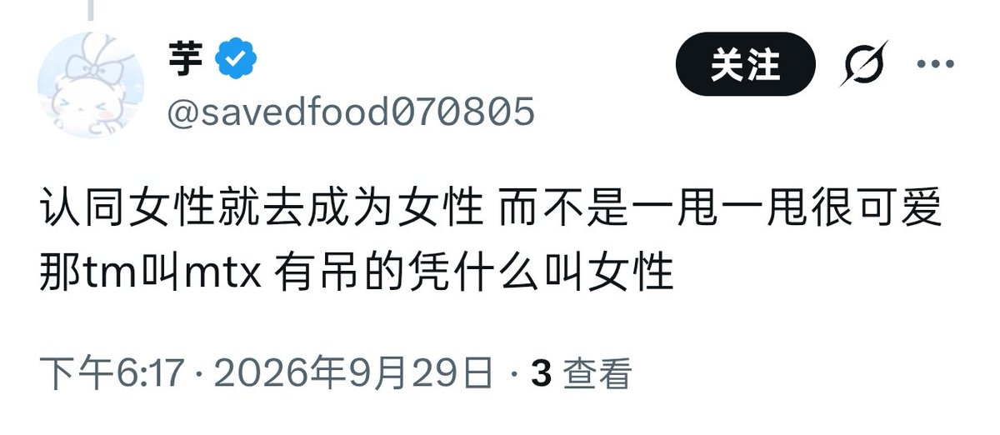

姐妹你别装死啊，回一下我呗，是不敢回复我吗？我确实是经验女性。所以我都已经是女性了还要怎么“去成为女性”呢？还是说在你的定义里只有顺女才算女性，那又是为什么呢？你对“女性”的定义就这么狭隘吗，狭隘到最后连你自己都装不进去
以及我很好奇，到底是哪条规定详细写了有唧唧就不能是女生，女生为什么不能有唧唧呢？我对那里感觉良好，甚至偶尔还会拿出来玩玩，那我就因为这个就不是女的了吗原来，还是对你来说一个女性还必须讨厌自己身体的某个部分才有资格叫女性吗？
哦对了，如果你真的觉得“女性”这个词只能指顺女，那按照你自己的标准，你这辈子也不会是女的哦。当然了这句话只是按照你的定义对你说的。
以及我很好奇，到底是哪条规定详细写了有唧唧就不能是女生，女生为什么不能有唧唧呢？我对那里感觉良好，甚至偶尔还会拿出来玩玩，那我就因为这个就不是女的了吗原来，还是对你来说一个女性还必须讨厌自己身体的某个部分才有资格叫女性吗？
哦对了，如果你真的觉得“女性”这个词只能指顺女，那按照你自己的标准，你这辈子也不会是女的哦。当然了这句话只是按照你的定义对你说的。
